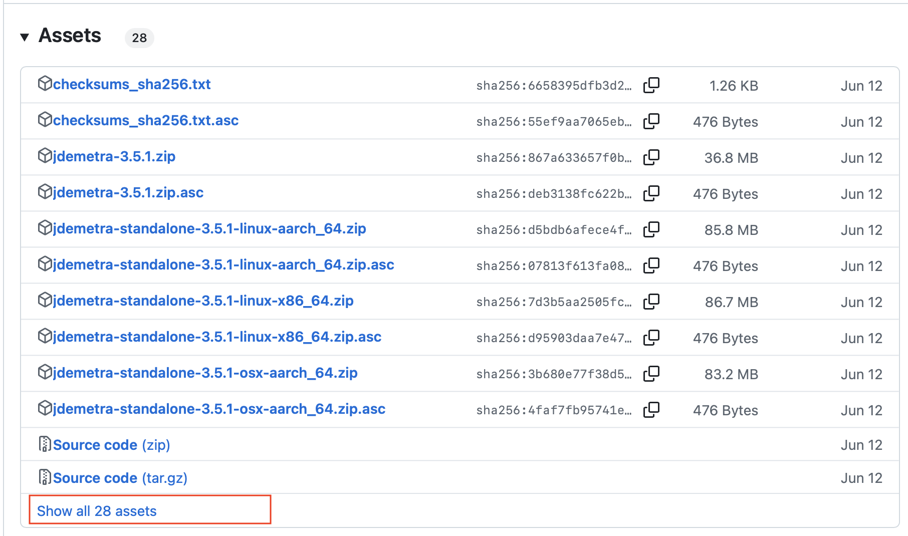
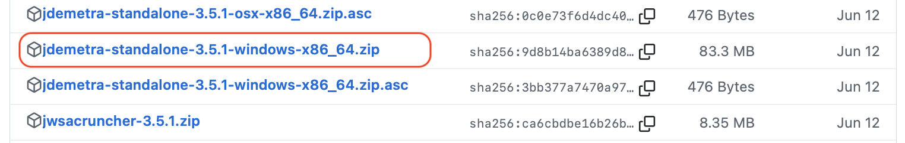
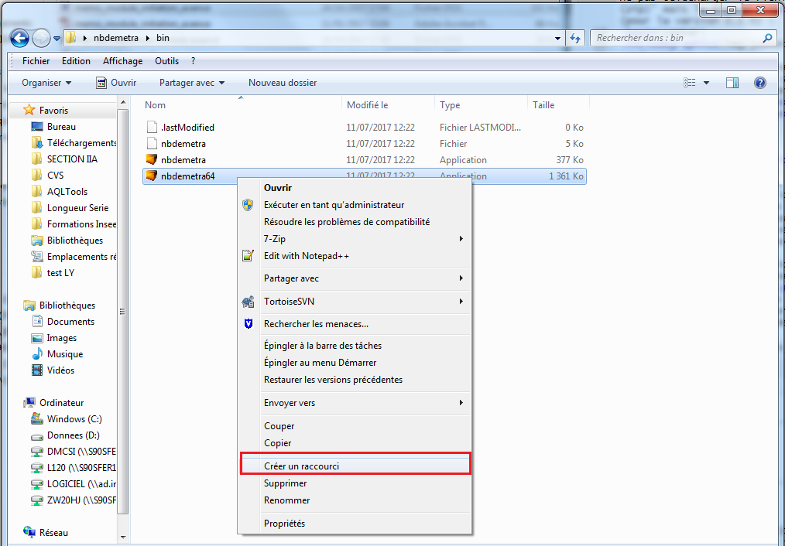
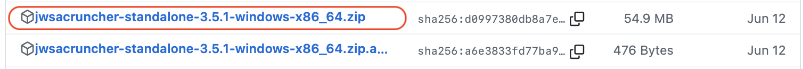

library(rjwsacruncher)
download_cruncher(v3 = FALSE) # Pour télécharger le cruncher
configure_jwsacruncher() # Pour le configurer avec une version portableInstaller (R)JDemetra+ et le JWSACruncher
Pour utiliser JDemetra+ il faut deux logiciels : JDemetra+ et Java. Nous recommandons d’utiliser les versions 3.x.y de JDemetra+, les versions 2.x.y n’étant plus maintenues à partir de la décembre 2026.
Téléchargement de JDemetra+
Versions 3.x.y
Les version 3.0.0 et plus de JDemetra+ et du JWSACruncher sont disponibles ici : https://github.com/jdemetra/jdplus-main/releases. Chaque version possède un installateur comprenant directement une version portable de Java (versions “standalone”) : c’est l’approche que nous recommandons pour éviter de télécharger Java de manière indépendante et de faire la configuration. Dans le cadre de la version 3.5.1, la fichier à télécharger sous Windows est jdemetra-standalone-3.5.1-windows-x86_64.zip. Pour le trouver, une fois sur la page GitHub, il faut cliquer sur le lien Show all assets :
 Vous pouvez désormais chercher et trouver la version que vous souhaitez installer :
 Après avoir télécharger le fichier, dézipper le dans un endroit stable (i.e. un chemin qui ne changera pas).
Versions 2.x.y
Les version 2.x.y de JDemetra+ sont téléchargeables depuis le lien github de l’application : https://github.com/jdemetra/jdemetra-app/releases. Deux solutions pour l’installer : télécharger le fichier .exe qui nécessite des droits d’administrateur ou télécharger le .zip qui permet d’avoir une version portable du logiciel.
Attention : pour la seconde option ne pas télécharger le fichier Source code (zip) mais le fichier jdemetra+-2.2.2-bin.zip (pour la version 2.2.2) :

Une fois le fichier téléchargé, il suffit de le dézipper : le logiciel se trouve alors dans le dossier \nbdemetra\bin\, ce sont les fichiers nbdemetra.exe (version 32-bit) et nbdemetra64.exe (version 64-bit).
Utilisation d’une version portable de Java
Pour utiliser la version 2.2.4 de JDemetra+ (et les packages R associés) il faut avoir la version 8 de Java (ou une version supérieure). Pour la version 3.0 de JDemetra+ (et les packages R associés) il faut avoir la version 17 de Java (ou une version supérieure) : nous utiliserons donc la version 17 de Java pour s’assurer une compatibilité avec tous les logiciels Si l’on a pas cette version d’installée et que l’on n’a pas les droits d’administrateur pour installer Java il faut alors installer une version portable de Java et lancer JDemetra+ avec cette version de java.
Pour installer une version portable de java, vous pouvez aller ici :
Pour lancer JDemetra+ avec cette nouvelle version de Java il faut :
créer un raccourci vers l’application
faire un clique-droit sur le raccourci et ensuite cliquer sur « Propriétés ». Il reste alors à modifier la variable « Cible » en ajoutant le paramètre suivant :
--jdkhome "[chemin du dossier Java17]".

Par exemple, si JDemetra+ et Java sont installés sousD:\Programmes\, la variable Cible contiendra l’adresseD:\Programmes\nbdemetra\bin\nbdemetra64.exe --jdkhome "D:\Programmes\Java17".
Attention : le chemin du raccourci est absolu, il doit donc être modifié à chaque fois qu’un des répertoires racines de JDemetra+ ou Java est déplacé.
Installation du JWSACruncher
Le cruncher (JWSACruncher) est un outil qui permet de mettre à jour un workspace de JDemetra+ et d’exporter les résultats à partir de la console, sans devoir ouvrir JDemetra+. La mise à jour d’un workspace peut alors se faire à partir d’un autre logiciel statistique (R ou SAS par exemple). Cela facilite la mise en place d’une chaîne de production en facilitant la production courante et en mettant en place une politique de rafraîchissement des données.
Versions 3.x.y
Les version 3.0.0 et plus de JDemetra+ et du JWSACruncher sont disponibles ici : https://github.com/jdemetra/jdplus-main/releases. Chaque version possède un installateur comprenant directement une version portable de Java (versions “standalone”) : c’est l’approche que nous recommandons pour éviter de télécharger Java de manière indépendante et de faire la configuration. Dans le cadre de la version 3.5.1, la fichier du JWSACruncher à télécharger sous Windows est jwsacruncher-standalone-3.5.1-osx-x86_64.zip. Pour le trouver, une fois sur la page GitHub, il faut cliquer sur le lien Show all assets :
Vous pouvez désormais chercher et trouver la version que vous souhaitez installer :
 Après avoir télécharger le fichier, dézipper le dans un endroit stable (i.e. un chemin qui ne changera pas).
Versions 2.x.y
La version 2.2.4 du cruncher peut être téléchargée ici https://github.com/jdemetra/jwsacruncher/releases (fichier jwsacruncher-x.y.z-bin.zip) Si l’on utilise une version portable de Java (voir section précédente) il faut encore modifier certains paramètres pour utiliser le cruncher :
- dézipper le fichier téléchargé ;
- dans le dossier dézippé, ouvrir (par exemple avec Notepad++) le fichier
jwsacruncher.batprésent dans le sous-dossier\bin\(c’est-à-dire sousjdemetra-cli-2.2.4\bin\dans la version 2.2.4 du cruncher) ;
- modifier la valeur de la variable
JAVACMDde la ligne 71 (actuelleJAVACMD=java) par l’adresse vers le fichierjava.exede la version portable . Ainsi, si Java est installé sousD:\Programmes\, la nouvelle ligne estif "%JAVACMD%"=="" setJAVACMD="D:\Programmes\Java17\bin\java".
Le téléchargement et la configuration du cruncher peut également se faire via rjwsacruncher:
Configuration des packages R avec Java
Pour savoir quelle version de Java est utilisée par R, on peut utiliser le code suivant :
library(rJava)
.jinit()
.jcall("java/lang/System", "S", "getProperty", "java.runtime.version")Pour configurer R avec une version portable de Java, il faut lui indiquer où est cette version de Java en modifiant la variable d’environnement JAVA_HOME. Si l’on a téléchargé la version standalone de 3.5.1 de JDemetra+ (voir Section 1) et que l’on a copié le dossier nbdemetra dans C:/Programmes, la version portable de Java se trouve sous C:/Programmes/nbdemetra/jdk-21.0.7+6-jre. Pour modifier la variable d’environnement JAVA_HOME, trois solutions :
- Avant tout chargement de package nécessitant Java (
rJava…) (si vous avez lancé le code précédent, relancez donc R) :
Sys.setenv(JAVA_HOME='C:/Programmes/nbdemetra/jdk-21.0.7+6-jre')Pour éviter de faire cette manipulation à chaque fois que l’on relance R, deux solutions :
modifier le
JAVA_HOMEdans les variables d’environnement de Windows (voir https://confluence.atlassian.com/doc/setting-the-java_home-variable-in-windows-8895.html).modifier le
.Renviron: depuis R lancer le codefile.edit("~/.Renviron"), ajouter dans le fichier le chemin vers la version portable de Java comme précédemment (JAVA_HOME='C:/Programmes/nbdemetra/jdk-21.0.7+6-jre'), sauvegarder et relancer R.
Vous pouvez maintenant installer tous les packages nécessaires :
install.packages("rjd3toolkit", repos = c("https://rjdverse.r-universe.dev", "https://cloud.r-project.org"))Si vous utilisez un ordinateur professionnel, pensez à configurer le proxy pour que ces commandes puissent fonctionner (voir https://www.book.utilitr.org/01_r_insee/fiche-personnaliser-r#le-fichier-.renviron). Pour cela vous pouvez utiliser curl::ie_get_proxy_for_url() pour récupérer l’adresse du proxy et ajouter deux variables http_proxy et https_proxy dans les variables d’environnement.